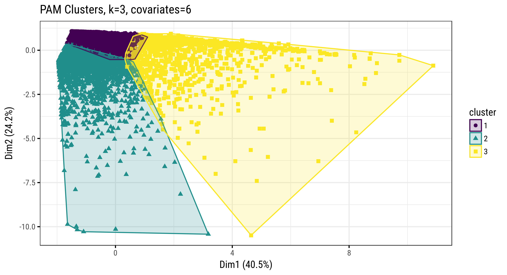

6.2 Ghana
We start with a non-hierarchical PAM (Partitioning around Medoids) clustering approach using the set of 7 variables listed below and data from Ghana GLSS6 initially (all farm households). The selected variables are defined as:
croparea_impcultivated area (in fact operated area) in ha (imputed)cropsalesvalue of sales from crops and crop byproducts (Cedis)aggrossgross farm income (Cedis)totgrossgross household income (Cedis)totcropprodvalue of crop production (Cedis)naggross_shnon-farm income as share of total gross incomecropsales_shcrop sales as share of total crop production (in fact share of all ag products sold)
Note on k-mean and pam techniques: the use of means in k-means implies that clustering is highly sensitive to outliers. This can severely affects the assignment of observations to clusters. PAM (also known as k-medoids clustering) can provide a more robust algorithm in some instances.
Note on violin/pirate plots: all distributional plots below show median line in red, mean in green, and the blue region is the inferred 95% confidence interval of the mean. At present pirate plots cannot be drawn for an entire population (using weights), simple boxplots are used instead showing median and IQ range.
Below are pair-wise scatter plots across all selected variables (cultivated area, sales, and income variables) colored by region.

6.2.1 Aproach #1 – Partitioning
With the selected variables (standardized) the optimal number of clusters (based on average silhouette width) is 3 or 7. We choose to test results using k=3 and k=5 in the following partitioning schemes.

Fig. 6.1: PAM Clustering of GLSS6 Households (Euclidean Distance)

Fig. 6.2: Clusters of Farm Households (PAM, k=3)

Fig. 6.3: Clusters of Farm Households (PAM, k=5)
| PAM k=5 | ||||||
|---|---|---|---|---|---|---|
| PAM k=3 | 1 | 2 | 3 | 4 | 5 | All |
| 1 | 1,547 | 1,671 | 48 | 0 | 0 | 3,266 |
| 2 | 37 | 30 | 1,969 | 0 | 285 | 2,321 |
| 3 | 439 | 9 | 45 | 1,056 | 58 | 1,607 |
| All | 2,023 | 1,710 | 2,062 | 1,056 | 343 | 7,194 |
Below are descriptive characteristics for the sample of farm households across the resulting k=3 clusters.

Fig. 6.4: Distribution of Household Characteristics across 3 Clusters (PAM)
Fig. 6.4: Distribution of Household Characteristics across 3 Clusters (PAM)
6.2.2 Aproach #2 – Hierarchical Clustering
This method is sensitive to the choice of dissimilarity measure (distance matrix). Euclidean distance is often preferred, however a correlation-based distance (with similar observations sharing features that are more highly correlated) may be used to identify household profiles/preferences. In the following we retained a XXX distance measure.
Further there are multiple generic types of hierarchical clustering algorithms:
- Agglomerative – “bottom up” approach: each observation starts in its own cluster, and pairs of clusters are merged as one moves up the hierarchy (uses R
agnes()).
- Divisive – “top down” approach: all observations start in one cluster, and splits are performed recursively as one moves down the hierarchy (uses R
diana()).
- HKmean – a hybrid hierarchical k-means clustering for optimizing clustering outputs (uses R
hkmean()).
We contrast the 3 approaches, cutting the resulting trees at 5 stems.
| Divisive Clusters | |||||
|---|---|---|---|---|---|
| Agglomerative Clusters | 1 | 2 | 3 | 4 | All |
| 1 | 6,478 | 0 | 0 | 0 | 6,478 |
| 2 | 387 | 99 | 0 | 0 | 486 |
| 3 | 0 | 187 | 5 | 0 | 192 |
| 4 | 0 | 0 | 31 | 7 | 38 |
| All | 6,865 | 286 | 36 | 7 | 7,194 |

Fig. 6.5: Results from Agg. an Div. Hierarchical Clustering (k=4)

Fig. 6.5: Results from Agg. an Div. Hierarchical Clustering (k=4)
Below are descriptive characteristics for the sample of farm households across the resulting tree branches.

Fig. 6.6: Distribution of Household Characteristics across 4 Clusters (AGNES, k=4)

Fig. 6.6: Distribution of Household Characteristics across 4 Clusters (AGNES, k=4)
Fig. 6.7: Distribution of Household Characteristics across 4 Clusters (DIANA, k=4)

Fig. 6.7: Distribution of Household Characteristics across 4 Clusters (DIANA, k=4)
6.2.3 Approach #3 Model-Based Clustering
This approach does not yield interesting results. Not shown here for now.
6.2.4 Key Results
Below are population summaries for the selected cluster scheme.
Tables of summary statistics for the entire population.